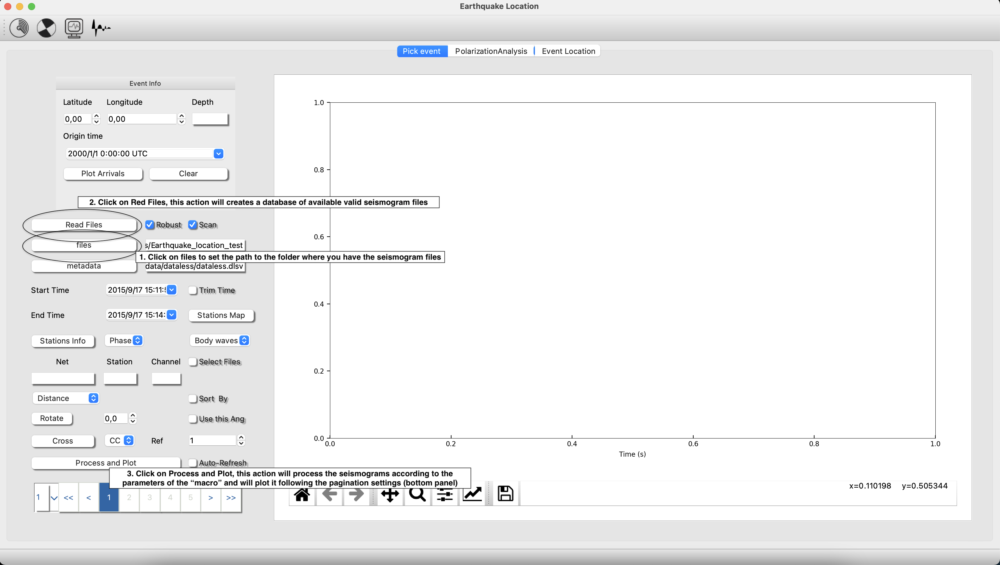

Warming tutorial
This section will show you the overall structure of the project and a basic idea of how are the data managed by ISP.
Seismograms and metadata

Description
In ISP we have decided go for minified format, with is one of the most broadly used data storage formats for seismograms. The best description is given at http://ds.iris.edu/ds/nodes/dmc/data/formats/miniseed/ which is simply:
MiniSEED is the subset of the SEED standard that is used for time series data. Very limited metadata for the time series is included in miniSEED beyond time series identification and simple state-of-health flags. In particular, geographic coordinates, response/scaling information and other information needed to interpret the data values are not included.
Time series are stored as generally independent, fixed length data records which each contain a small segment of contiguous series values. A reader of miniSEED is required to reconstruct longer, contiguous time series from the data record segments. Common record lengths are 512-byte (for real time streams) and 4096-byte (for archiving), other record lengths are used for special scenarios.
A “file” or “stream” of miniSEED is simply a concatenation of data records. Depending on the capabilities of the intended reader the data records for multiple channels of data may be multiplexed together.
How to read miniseed files
The user can find example of local miniseed files containing a broad variety of waveforms at .isp/examples (see Project Structure). Additionally, you can download data and metadata from the tool "Retrieve Data", either from a specific time window or an earthquake from a catalog.
For example, if you are using Earthquake Analysis Module. Follow. The directions of the following screenshot:
Robust will check that the files to be storage in the database are valid mseedfiles. Scan will allow create the database from a full folder tree. This option is very useful when the user has the mseed files distributed as SDS architecture (NET/STATIONS/CHANNELS/FILES).

Metadata (Dataless and *.xml)
ISP uses two kind of metadata files either Dataless or xml. (https://docs.obspy.org/tutorial/code_snippets/stationxml_file_from_scratch.html).
You can find an example of this files at the folders isp/Metadata/dataless and isp/Metadata/xml. As you will see, in the this files there is information structured as a dictionary nets/stations/channels. Personally, the best way to make your own metadata file is using either the java software PDCC or going to the API Station Management Portal.

Important: The idea in ISP is that your Metadata file (one single file) contains all of the information (such as coordinates of your stations, instrument response, sampling frequency and so on ...) of the miniseed files you are going to manage. The reason of this design is that, it is easier to programming something that works independently from the miniseed file to metadata. For example when sorting the minified files from respect to an event. The software internally reads the name of all of your files (in the header) and then match this info with the metadata file.
Notes: It is very easy using python to convert your dataless to xml. From: https://docs.obspy.org/_modules/obspy/core/inventory/inventory.html#Inventory.write
from obspy import read_inventory
inv = read_inventory("path_to_your_dataless")
inv.write(path_or_file_object, format="stationxml", validate=True)